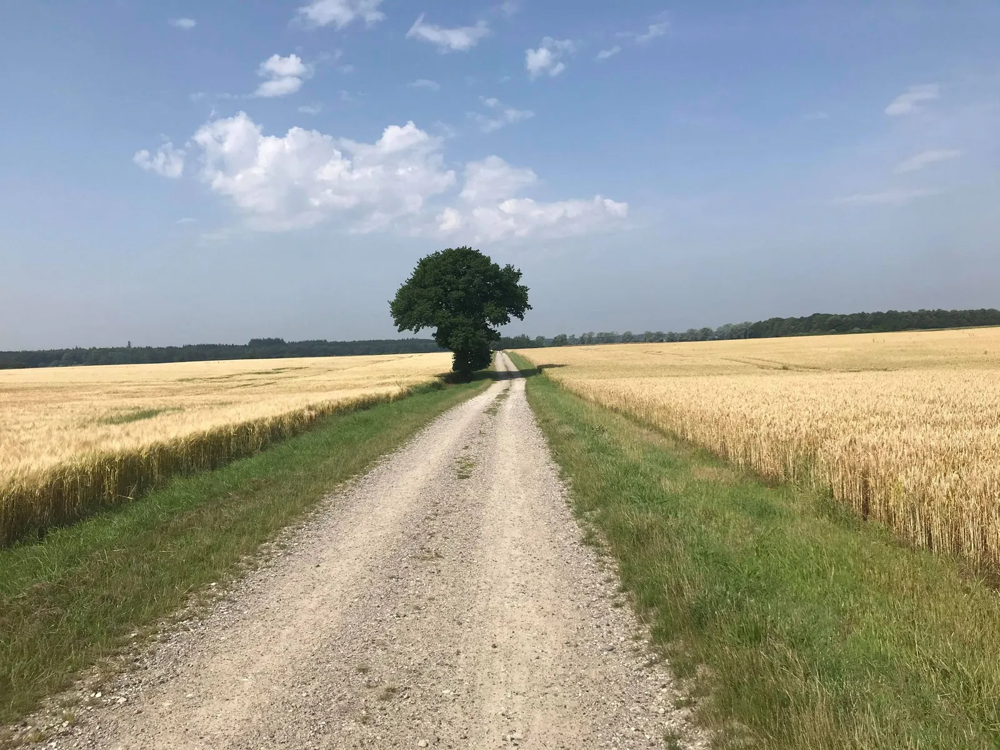

18. etape: Ronde van Falsteren

Tigeren fra Voel bliver væk, Kristian Blume tager dingerføring på 60 km, Peugeot, K-Werk, TI-Raleigh og G.S. Velopresse i opløsning, en rørstrømsk Jesper Victor og en løsning til opbevaringen af de to lettere brugte filippinske au pairs, er noget af indholdet fra 18. etape – så find noget koldt at drikke og en god plads i skyggen.
Starten på Tour de Danmarks 18. etape var i dag henlagt til det nordtyskbesatte sommerhusområde på det sydlige Falster. Her ventede en 139 km lang rute langs Falsters kyst.

Hvor er Per? Hvor er Tigeren fra Voel?
Starten gik ved B1909 og Gedesby Mølle Laugs mere eller mindre permanente loppemarked ved Gedesby Mølle og gik derfra nordpå ad den gamle Gedser Landevej. Rytterne skulle i dag igennem metropolerne Væggerløse, Nykøbing Falster, Nørre Alslev, Stubbekøbing og Marienlyst inden de til slut rammer opløbet tilbage i Gedesby. Alt sammen rammet ind af fantastiske grus- og smalle landeveje langs Falsters kyst i urets retning.
Feltet bliver skudt afsted og allerede gennem småbyerne langs Gedser Landevej bliver der skudt en vældig fart. Det er K-Werk ryttere, der klog af skade prøver at ryste Molteni fra start. Men det lykkes ikke. Feltet er samlet da de efter 18 km suser forbi kirke og brugs i Væggerløse, inden de drejer til venstre mod Hasselø hvor vejen ligger helt nede i vandkanten.
Kaptajn Bjørnsteen kalder Tigeren fra Voel frem for at sætte lidt mere fart på, men Per Sandahl er ingen steder at se i feltet.
Jeg kalder Per frem, men han pist væk! Det viser sig senere, at han er standset for at tage billeder af Væggerløse kirke, for at lægge den op på en af sine facebookprofiler. Jeg forstår ikke de unge mennesker nu til dags…, udtaler en lettere frustreret Kaptajn.
Løvtagspavé, Mr. Graywel King og dingerføring på 60 km
I mangel af tempo-tiger forbliver feltet samlet ind gennem Nykøbing hvor ruten går langs med havnen og dens smukke kubistiske siloer og industri. Herefter rammes den mere spiselige Strandboulevarden inden rytterne efter 29 km rammer dagens første pave. En smal sag med kun 70 centimeters penge at køre på i bredden, til gengæld er den fuldstændig overdækket med et tag af løv og det føles som at køre i en grøn tunnel. Feltet bliver naturligvis strukket ud og positionskampen inden paveen resulterer da også i et par styrt. Løvtaget forsvinder og grusvejen breder sig med mark på begge sider de næste tre km.

Moltenis ukronede graywel-konge (Mr. Graywel King, red), Jens Langergaard strækker feltet ud og der kæmpes for at hænge på inden det naturligvis knækker over i to.
Da hovedfeltet kommer på asfalt igen tager Kristian Blume over og tager en dingerføring langs med Guldborgsund, op gennem småbyerne Alstrup, Vester Kippinge, Egense og Vålse,
og langs med nordkysten helt til Stubbekøbing hvor Kristian lader sig glide ned i feltet igen efter godt 60 km mælkesyretrip!

Jeg kunne mærke, at jeg havde ekstra meget at skyde med efter mine dage i isolation, så den fik bare hele armen, lyder det fra Blume
Knækket Peugeot-pedalarm, kaos og opløsning
På grusvejen mellem Søborg og Grønsund på Falsters nordøstligste hjørne er der en anden Moltenirytter der gør sig bemærket. Det er Jeppe Thiemer der som skudt ud af en kanon træder væk fra feltet.
En peugeotrytter forsøger at gå med. Han når næsten op til udbryderen, men må stige af cyklen da venstre pedalarm knækker. I feltet er der usikkerhed om hvem der skal føre nu. Der er måske endda tale om total opløsning: Team K-Werk fik brugt deres tændstikker allerede inden Væggerløse, TI-Raleigh og Joe Purse er kørt forkert, G.S. Velopress diskuterer hvem der har den bedst polerede bagskifter, Team Brooklyn og Thomas Marker er som sædvanlig ikke mødt til start – og har derfor slet ikke opdaget at en Molteni-rytter er stukket af. Med kaos i feltet og gode ben i udbruddet lykkes det Thiemer at få slået et godt hul.
Afstanden vokser og vokser, og da feltet når de stråbeklædte huse i Hesnæs, har Thiemer allerede været der 15 minutter tidligere.
Cola, afslapning og en rørstrømsk Jesper Victor i Fietsen Centrum Bøtø
Ruten fortsætter ned langs østkysten ad grusvejen gennem Bønnet Skov, Mellemskov, Teglskov og Tromnæs Skov, med Østersøen til venstre og træer til højre. Så smukt at man får lyst til at græde.
Efter 125 km kommer løbets forreste rytter til Elkenøre Strand, en del af sommerhusområdet Marienlyst, med Elkenøre i nord og Bøtø i syd. Tempoet er stadig højt og afstanden til feltet er øget yderligere.
Det er nu oppe på 25 minutter, og Thiemer ser sit snit til at dreje væk fra ruten og ind på Bøtøs hemmeligste adresse, hvor Fietsen Centrum Bøtø holder til. Her tager han sig et lille hvil og får serveret en Cola af Jesper Victor, der er glad for at se at Jeppes mange træningsophold i Fietsen Centrum har båret frugt.

Det er fantastisk, intet mindre… jeg så potentialet med det samme. Den uslebne diamant står knivskarpt. Han er mit mesterværk!, siger en rørstrømsk Jesper Victor, der i ulige uger hedder Karma Cowboy.
Jesper Victor ser forøvrigt ud til at genvinde hviledagsklassementet i år. Han er indtil nu i dette Tour de Danmark noteret for 20 hviledage.
Sejr til Thiemer – og flexbolig til au pairs
Efter endt hvil er det op på cyklen igen og tilbage på ruten. Nu mangler kun de sidste 5 km ned gennem Bøtøskoven. I sportsdirektørbilen melder Klaus om en afstand på fem minutter ned til feltet, der føres an af Peugeot-Pelle og K-Werk. Bagerst i feltet sidder Kaptajn Bjørnsteen og Max “Fart” Nielsen og hyggesludrer over to mørke Leffe og en pibe som Max havde i baglommen.
På opløbet ved møllen kan Jeppe Thiemer række armene i vejret og lade sig hylde efter endnu en succesfuld etape. Han præmieres med en lokal specialitet – en flexbolig i urimeligt dårlig stand.
Jeg er selvfølgelig glad for sejren, men jeg er nok mere begejstret for flexboligen. Jeg har haft lidt problemer med hvor jeg lige skulle gøre af de to brugte au pairs jeg vandt den anden dag, kommer det fra den storsmilende etapevinder.
5 minutter senere kommer det decimerede hovedfelt. Max og Kaptajnen bunder deres Leffe og træder til og med stort schwung suser de forbi de resterende ryttere inden de overhovedet får lagt an til at spurte. Molteni rydder podiet. Igen.
Nede fra et bord på loppemarkedet kigger en mand med Brooklyn kasket overrasket op og taber det brugte kaffestel han har i hænderne.
Jeg havde slet ikke set, at de var kørt. Jeg blev så optaget af alle de gode tilbud, at jeg blev helt opslugt og glemte tid og sted. Bare ærgerligt at jeg tabte det kaffestel – det havde passet perfekt på mit advokatkontor” udtaler han.
Forza Jeppe!

18. Etape:
1. Jeppe Thiemer, Squadra Molteni
2. Max Nielsen, Squadra Molteni
3. Kaptajn Bjørnsteen, Squadra Molteni
Klassement:
1.Jeppe Thiemer, Squadra Molteni
2. Niels Bjørnsteen, Squadra Molteni
3. Max ”Maxteni” Nielsen, Squadra Molteni
4. Lars Munch, Squadra Molteni
5. Grane Maaløe, Squadra Molteni
6. Jens StærkBojesen, Squadra Molteni
7. Carsten Jacobsen, Squadra Molteni
8. Svend Seegert, Squadra Molteni
9. Jens Langergaard, Squadra Molteni
10. Eigil Leegaard, Squadra Molteni
11. Per Sandahl, Squadra Molteni
12. Løjtnant Sørensen, Squadra Molteni
Hold:
1. Squadra Molteni
2. Team Willier-Triestina
3. Team Peugeot Re-Cycled
4. Team K-Werk
5. G.S. Velopress
6. TI-Raleigh
Hviledags-Klassement:
1. Jesper Victor, Team Karma Cowboy
DNS-Klassement:
1. Thomas Marker, Team Brooklyn